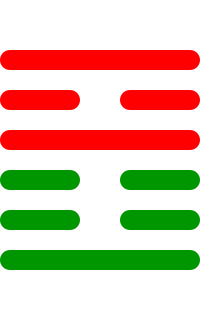

第二十一卦
噬嗑卦

卦辞
亨，利用狱。
噬嗑卦象征咬合、决断与执行。卦辞意为：亨通，利于使用刑法。噬嗑卦教导我们要果断处理问题，像咬合食物一样解决困难。
彖传
颐中有物，曰噬嗑。噬嗑而亨，刚柔分，动而明，雷电合而章。柔得中而上行，虽不当位，利用狱也。
彖传说：颐中有物，叫噬嗑。咬合而亨通，刚柔分开，动而明亮，雷电合而彰明。柔得中位而向上行，虽然位置不当，但利于使用刑法。
象传
雷电，噬嗑。先王以明罚敕法。
象传说：雷电噬嗑，就是噬嗑卦。先王应当效法这种精神，明确刑罚，整饬法制。雷电象征威严和力量，要建立公正的法律制度。
爻辞
初九：屦校灭趾，无咎
足械灭趾，没有灾害。
初九爻位于最下方，初犯过失。戴上脚枷伤了脚趾，表示小的惩罚，没有大的灾害，是及时的警示。
六二：噬肤灭鼻，无咎
咬肉灭鼻，没有灾害。
六二爻得中得正，处理果断。咬肉时伤到鼻子，表示处理事务虽然有些过当，但没有灾害，是必要的严厉。
六三：噬腊肉，遇毒，小吝，无咎
咬腊肉，遇到毒，小困难，没有灾害。
六三爻位置不当，遭遇困难。咬腊肉时遇到毒性，虽有小的困难，但没有灾害，表示处理难题时的谨慎。
九四：噬干胏，得金矢，利艰贞，吉
咬干肉带骨，得金矢，利于艰难中坚守正道，吉祥。
九四爻阳刚得位，克服困难。咬干肉带骨头，得到金属箭头，表示在艰难中坚持正道会有收获，吉祥。
六五：噬干肉，得黄金，贞厉，无咎
咬干肉，得黄金，坚守正道有危险，没有灾害。
六五爻居中尊位，有收获。咬干肉得到黄金，虽然坚守正道有危险，但没有灾害，表示处理得当。
上九：何校灭耳，凶
戴颈枷灭耳，凶险。
上九爻位于极点，过于严厉。戴上颈枷伤了耳朵，表示刑罚过重，有凶险，告诫不要过度惩罚。